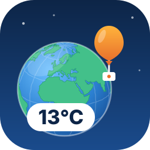

Groundcheck checking feed…About this measurement

Station ID, a temperature (e.g. 18 or 18°C), or a place name.
sondes.php feed) from SondeHub (sondehub.org, an open worldwide database of radiosonde telemetry) and from NOAA's Integrated Global Radiosonde Archive (IGRA), the official soundings of about 650 weather-service stations in more than 100 countries — real sensor readings from balloons currently or recently in flight, not a forecast model.Save a nickname on this device — no password, no server account, just a locally-saved identity.
Welcome back,
Live weather from radiosonde balloons
Groundcheck shows the temperature, air pressure and humidity measured at ground level by weather balloons (radiosondes) around the world, as a map and as a weather app. Radiosondes are launched from stations every day, and the first reading each one sends from the ground is a real measurement taken at that spot.
Where the data comes from: the live radiosonde feed of sonde.mine.nu, amateur balloon tracking from SondeHub, and the NOAA IGRA archive of official weather-service launches. Readings come from several hundred stations across Europe, North and South America, Asia, Africa, Australia and the Pacific islands.
The forecast: Groundcheck's own forecast for the next hours and days is built only from these balloon readings (seasonal normals, how today differs from normal, and the pressure trend). It does not use a weather model and it can be wrong; the accuracy page shows how the big weather models scored against what balloons measured.
Free to use: the web app, the Firefox add-on, a public data API, and a self-host package to run your own copy. We also make Flowsearch, a search engine with its own crawler and index. See also the 3D globe of every reading.